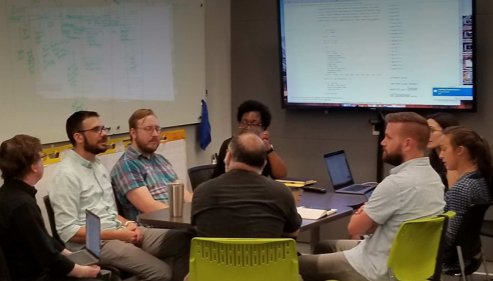

Dawn Chorus
An alarm clock app that takes its name from a natural phenomenon: the singing of a large number of birds that starts just before dawn each day. Like nature’s dawn chorus, this alarm clock grows louder as different birds join together in song.
| Museum | Carnegie Museum of Natural History |
| Dates | Mobile app launched on iOS and Android in March 2017 |
| Android update released in March 2018 | |
| Roles | Lead Designer |
| Lead Developer | |
| Illustrator | |
| Achievements | 2018 MUSE Bronze Award for Mobile Application awarded by the American Alliance of Museums |
| Featured by Apple on App Store | |
| Downloaded over 1 million times | |
| Press coverage by Pittsburgh Post-Gazette, Audubon, Hyperallergic, and many more publications in the USA and abroad | |
| Links | Introducing Dawn Chorus by Sam Ticknor |
| Evaluating Dawn Chorus by Sam Ticknor | |
| Video |
Migratory Bird Visualization
Are birds migrating sooner due to global warming? According to data collected at Powdermill Nature Reserve, the answer is yes. This playful visualization features over 6000 frames of interactive animation and shows how birds migrate, mate, and raise their young. Visitors scrub through a year at Powdermill and observe Wood Thrush and Dark-Eyed Junco behavior. They also explore the phenological shifts that have been recorded at the Powdermill Avian Research Center over the last 50 years.
| Museum | Carnegie Museum of Natural History |
| Dates | On view October 2017 - October 2018 in We Are Nature: Living in the Anthropocene |
| Moved to its permanent home in Bird Hall in October 2018 | |
| Roles | Lead Designer |
| Lead Developer | |
| Animator | |
| Illustrator | |
| Links | An Experiment In Data Visualization by Sam Ticknor |
| Video |
We Are Nature Kiosks
Interactive experiences for Carnegie Museum of Natural History’s exhibition We Are Nature: Living in the Anthropocene. Visitors were challenged to define 'nature', to take steps to live more eco-friendly lives, and to get involved in community conservation. Hand-painted graphics complemented the primarily non-digital exhibition.
| Museum | Carnegie Museum of Natural History |
| Dates | On view October 2017 - October 2018 |
| Roles | Lead Designer |
| Lead Developer | |
| Illustrator |
Warhol: Out Loud
An inclusive audio guide app for The Andy Warhol Museum. The app has particular focus on visitors that are blind and low-vision. Each tour stop has several short tracks, ranging in variety from curator analysis to archival audio.
| Museums | The Andy Warhol Museum |
| Dates | Beta iOS version launched for 7th floor of the Warhol in August 2016 |
| Roles | Designer |
| Developer | |
| Achievements | 2017 MUSE Gold Award for Mobile Application awarded by the American Alliance of Museums |
| Press coverage by New York Times, Smithsonian Magazine, Pittsburgh Post-Gazette | |
| The open sourced code was adapted to create an audio guide for the Nordic Museum in Stokholm, Sweden | |
| Links | Designing an Inclusive Audio Guide by Desi Gonzalez |
| Code Release: Out Loud by Ruben Niculcea | |
| Video |
Light Clock
An installation at the entrance to the Carnegie Museum of Art. A clock stands on the plaza taking intermittent 360° photos of the museum and street. Inside the museum, visitors see a beautiful blend of imagery captured by the clock. They can spin their body to activate the imagery and explore the collection of photos. This project owes its success to Caroline Record, who was the lead designer and developer.

| Museum | Carnegie Museum of Art |
| Dates | On view November 2016 - December 2017 |
| Role | Developer |
| Links | The Light Clock by Jeffrey Inscho |
| Photography Here and Now: Light, Time, and Social Practice by Divya Rao Heffley | |
| Seeing Spinning by Sam Ticknor |
Summer Adventure Chatbot
A Facebook Messenger chatbot that facilitates on- and off-site games and activities at the four Carnegie Museums. Activities include trivia, polls, scavenger hunts, and special events. The bot rewards users with stamps and achievements that can be exchanged for prizes.
| Museums | Carnegie Museum of Art |
| Carnegie Museum of Natural History | |
| The Andy Warhol Museum | |
| Carnegie Science Center | |
| Dates | Summer 2018 |
| Roles | Illustrator |
| Developer | |
| Links | A Chatbot Adventure by Sam Ticknor |
| Pittsburgh Post-Gazette Article |
Teenie Week Of Play
Participated in a hackathon in which developers explored the Teenie Harris Archive with code. We looked for ways to clean and extract meaningful information from archival metadata for thousands of photographs.

| Museum | Carnegie Museum of Art |
| Dates | July 2018 |
| Role | Developer |
| Links | Github |
Chair Draw
An interactive installation that allows visitors to add color to a drawing of a chair and see their drawing projected onto the actual chair object. This two week development sprint culminated in a day of user testing in the Decorative Arts and Design gallery.
| Museum | Carnegie Museum of Art |
| Dates | August 2018 |
| Role | Developer |